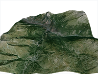

Example of how to intercept the request to the elevation data, and send elevation value to Online Maps.
Requirement: Tileset Control
Usage instructions:
This is just example. To make it work you need to add code of loading elevation data (line 31).
Elevation map must be 32x32.
Add this script to map GameObject.
This is just example. To make it work you need to add code of loading elevation data (line 31).
Elevation map must be 32x32.
Add this script to map GameObject.
InterceptElevationRequestExample.cs
/* INFINITY CODE 2013-2016 */
/* http://www.infinity-code.com */
using UnityEngine;
namespace InfinityCode.OnlineMapsExamples
{
[AddComponentMenu("Infinity Code/Online Maps/Examples (API Usage)/InterceptElevationRequestExample")]
public class InterceptElevationRequestExample : MonoBehaviour
{
private OnlineMapsTileSetControl control;
private void Start()
{
// Get Tileset control.
control = OnlineMapsControlBase.instance as OnlineMapsTileSetControl;
if (control == null)
{
Debug.LogError("You must use the Tileset control.");
return;
}
// Intercept elevation request
control.OnGetElevation += OnGetElevation;
}
private void OnGetElevation(Vector2 topLeftCoords, Vector2 bottomRightCoords)
{
// Elevation map must be 32x32
short[,] elevation = new short[32, 32];
// Here you get the elevation from own sources.
// Set elevation map
control.SetElevationData(elevation);
}
}
}